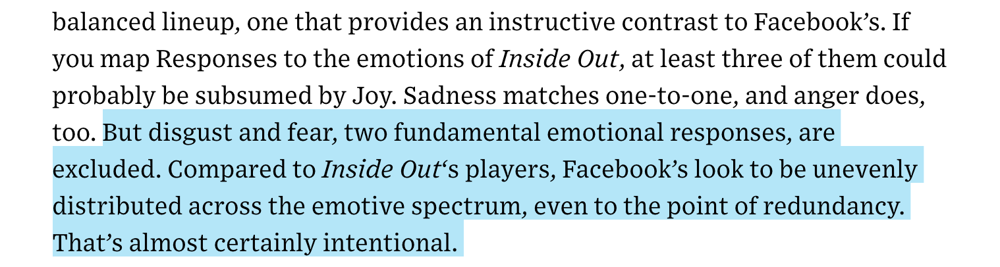

The like button was brought to Facebook in 2009 to allow the public to comment, react, support, and share posts and fanpages.


Click here for article
Dacher Keltner helped Facebook with developing stickers, and guided the company in developing reactions.




We use reactions anywhere from expressing our emotions, to debating serious topics.


Because facebook has become a popular website and we access it everyday, are our reactions becoming less expressive. And are the new reactions supposed to be a way to more excitement onto the page?
Are these reactions causing an issue regarding the emotions we express online?